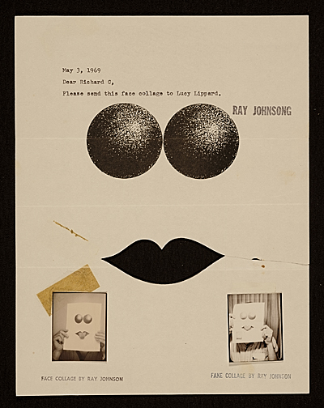
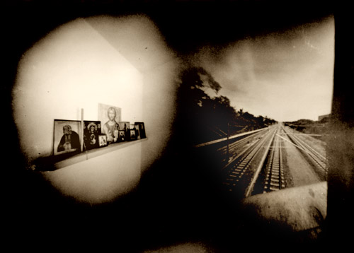

-
Purloined Letters: On Networked Art and Identity
by Greg Afinogenov October 2, 2009
The letter is typewritten and says simply: “Dear Richard G, Please send this face collage to Lucy Lippard.” Underneath, two orbs and a stylized pair of lips form an eerie sort of face. Underneath that, on either side of the page, there are two tiny photographs of people holding the image; one is labeled “Face Collage,” the other “Fake Collage.” Or take another letter. The envelope is addressed, in neatly typed block capitals, to “Bob Dylan, c. o. Grossman, Woodstock, NY.” But that’s not the real address; it’s crossed out in marker and the real addressee—the art collector Sam Wagstaff—scrawled in sloppily alongside.
These pieces are characteristic of the work of Ray Johnson, whose New York Correspondence School network was at the center of the American mail art movement between 1965 and 1995. Looking at his mailings—many of which have been digitized by the Smithsonian Archives of American Art—one is struck by the playful individuality of all the pieces, straining, in their sheer number and variety, against the technical limitations of pre-digital work. Johnson always insisted that every one of his mailings was tailored to its specific recipient, despite the network’s large and constantly shifting membership. To correspond with Ray Johnson meant to enter into a sort of intimate artistic contract, a personal link facilitated rather than eroded by distance.
Compare this to the depersonalized flatness of Przemek Zajfert and Burkhard Walther’s Camera Obscura: 2005/1-∞. The project, which has been in progress for four years and is on permanent display at the Galerie Merid in Stuttgart, involves a double pinhole camera, each hole of which is auctioned off on eBay to any willing recipient. The first buyer receives a camera, punches out one of the pinholes, and exposes an image on the film inside; she then sends it to the next buyer, who repeats the process for the other side. The result is a superimposed image—an accidental combination of two photographs potentially taken thousands of miles apart. Hundreds of these images have already been produced.

It would no doubt be specious to see a shift of world-historical proportions between these two approaches; certainly neither the ‘60s nor the ‘00s have a monopoly on anonymity or intimacy as artistic themes. Nonetheless, there is a fundamental formal difference between them. In the work of the New York Correspondence School, the locus of creative artistic practice lies in the deliberate design and assembly of a concrete message which both relies on and sustains an affective tie. For Zajfert and Walther, on the other hand, this locus is divided. From one point of view, it is the organization of the network itself—it does not intervene but ensures the possibility of the creative process. From another, it is the accident of the combination between two images, whose chance arrangement subverts any attempt at conscious artistic manipulation.
Of course, the two efforts are separated by more than just chronology. Unlike Ray Johnson’s network—which did use email in its last years—Camera Obscura relies integrally on the Internet as a means of correspondence and presentation. In fact, as experiments in mail art, both projects are inherently concerned with structures of correspondence and communication; they occupy a particularly well-placed vantage point from which to investigate the development of this new medium—and it is precisely the decade between Johnson’s death in 1995 and the birth of Camera Obscura that registers the most significant shifts in our thinking about the Internet.
Around the middle of the 1990s, when the new medium’s potential for cultivating new forms of community became generally apparent, a single trope began to dominate nearly every discussion about the subject. At its pithiest, it could be expressed by the slogan “On the Internet, nobody knows you’re a dog” (the tagline to a 1993 New Yorker cartoon). The idea was that the physical distance and the primarily textual communication that characterized Internet correspondence left open an infinite space for the construction of personal identity. One variant of this line of thought, which has remained remarkably resilient and useful for the creation of moral panics, was the paranoiac notion that no one on the Internet was who he pretended to be—with the accompanying implication that no Internet relationship could be truly personal or genuine. There was another side to the coin, however. For if pedophiles could pretend to be teenagers, regular human beings could also experiment with any number of possible personas, sloughing off the limitations of gender, class, and race in search of an identity that would be freely chosen rather than forcibly assigned.
There was a tension between these two dimensions of Internet identity. The more freedom remained to the individual to alter his own self-presentations, the more potential there was for (occasionally extreme) abuses of trust and the more difficult it was to create cohesive community ties. Most online communities developed social, rather than programmatic, solutions—formal and informal codes of behavior that limited the degree of experimentation open to their members. But a broader cultural phenomenon also emerged: a pervasive cult of unfiltered emotional rawness and sincerity coupled with an equally pervasive anxiety about insincerity and deception. (The latter accounts for the popularity of the designation “troll” as well as the inevitable discussions of Photoshop and viral marketing that surround any Internet novelty.) Thus, in one episode in mid-2001, a popular blogger died of cancer, eliciting a massive outpouring of sympathy; when it was revealed that she had actually been an invented persona, the resulting recriminations focused on the “authentic” emotional investment her illness had produced among her fans and the trust-relationship supposedly implied by her postings.
In fact, this development was not new. In The Fall of Public Man (1974), Richard Sennett traced the collapse of the distinction between public and private in the wake of industrial capitalism. During the eighteenth century, Sennett says, social life hinged on the creation of an appropriate, impersonal public image, down to elements of costume and makeup. Private life could therefore remain relatively autonomous. In the nineteenth and twentieth centuries, an increasing obsession with the personal expression of the personality destroyed the element of publicness; the result was a “tyranny of intimacy” in which social life came to demand the authentic, total disclosure of the private self. Thus the irony of the Internet is that it was hailed as a revolutionary medium for human communication, but actually rediscovered a much older communicative norm—only to end up driven by anxiety into recapitulating its own prehistory.
Parallel to this development, in the second half of the 2000s, another model of identity began to play a dominant role. Unlike the first, it was not accompanied by any fanfare, and the site of its unfolding was a secure database rather than the pages of Wired. Though its premises have not been coherently articulated anywhere (to my knowledge), it is nonetheless possible to summarize the two primary assumptions. The first is that the Internet has become involved in our lives to such a degree that almost nobody can avoid granting it access to some, functionally limited, sphere of their personal life: date of birth and other details (social networking), daily life (Twitter), tastes and preferences (forum discussions). The second is that this activity leaves behind legible traces which can potentially be reassembled to construct an identity—one which is always an accidental artifact of some other attempt at communication. In a rudimentary form, this model existed in the business plans of marketing companies already in the 1990s; today the presence of real but decontextualized online traces is taken as a given by anyone who uses the Internet.
The existence of these traces enables the existence of a whole ecosystem of sites dedicated to judging them. One site displays awkward romantic emails; another ridicules postings on niche forums; yet another mocks conversations on social networking sites. Under the first model of identity, these sites would not have been possible; to maintain what humor value they have, they must be both a) real, that is, indirect products of some real person’s online activity, and b) unintentional, or not deliberately created for the purpose of being mocked. The proliferation of these sites, and the volume of analysis they devote to evaluating traces, has created a kind of panopticon. Any bit of Internet activity—and, increasingly, non-Internet activity as well—may potentially be picked up and used as the basis for a normative judgment, which increases the pressure to conform to a vaguely-defined but real moral-aesthetic standard. (Indeed, it is here that we see how the two models of identity are symbiotic rather than antagonistic—the demand for authentic expression created by the one supplies the demand for traces created by the other.)
The first model of identity—and the affective, personal mail art aesthetic that is its artistic correlate—is a dead end. The freedom of creative, arbitrary construction it purports to offer is fatally undermined by the requirement of authenticity, without which genuinely personal relationships are impossible. One is forced either to surrender this freedom or to abandon affectivity as a principle. On the Internet, the latter has taken the form of sites like 4chan, where any hope of forging personal relationships is entirely absent. It is also what tended often to drive Ray Johnson’s work. Many of his mailings, though marked with superficial personal touches, amount to little more than stereotyped advertisements for his exhibitions. Johnson’s personality compensated for this flaw, but subsequent developments in physical mail art have become more and more anonymous. This solution, though it may escape the tyranny of intimacy, destroys every link between the quasi-public performances it enables and the private self.
Camera Obscura, although it represents in some ways an outgrowth of this process, derives its value from a different source—the accidental nature of its productions. This is also, of course, what drives the newer view of identity. Impersonality has its dangers; both the developing panopticon and the techniques adopted by Zajfert and Walther in their work tend to encourage a faceless homogeneity in which every place or person is equal to every other. (Zajfert and Walther explicitly characterize the project as an homage to Roman Opalka, whose work centers around the rhythmic, undifferentiated incrementation of numbers.) Yet, both for identity and for aesthetics, there is an opportunity here, and it lies precisely in the separation between impersonal and personal spheres. Impersonality in the realm of aesthetics is crucial, because it helps purge the figure of the artist of its subjectivistic, bohemian, and authentic-expressionist baggage. In the realm of identity, the pressure to discipline one’s traces contributes to the creation of a differentiated culture of public and private; that is to say, the more we accept mockery as a norm, the more we will accept the necessity of public faces for the Internet. We may have, then, what was once promised to us—an online public culture without paranoia, anxiety, or shame.

{kind=link}
{kind=link}
{kind=link}
{kind=link}